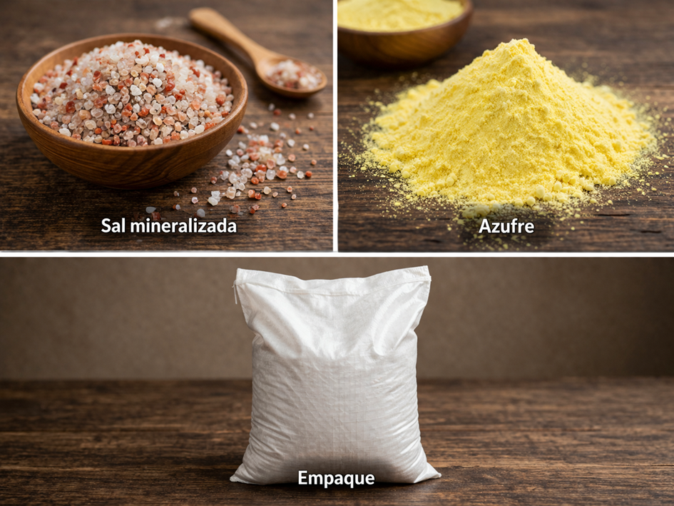
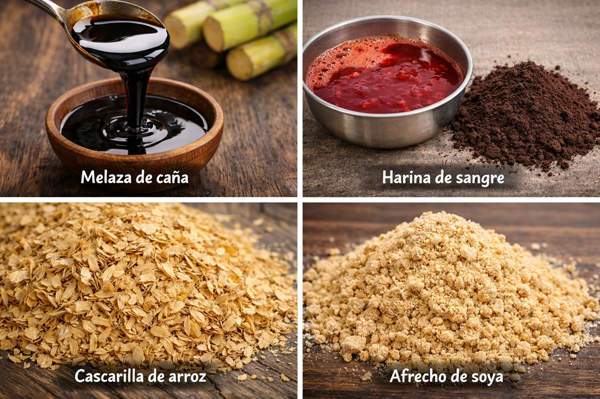
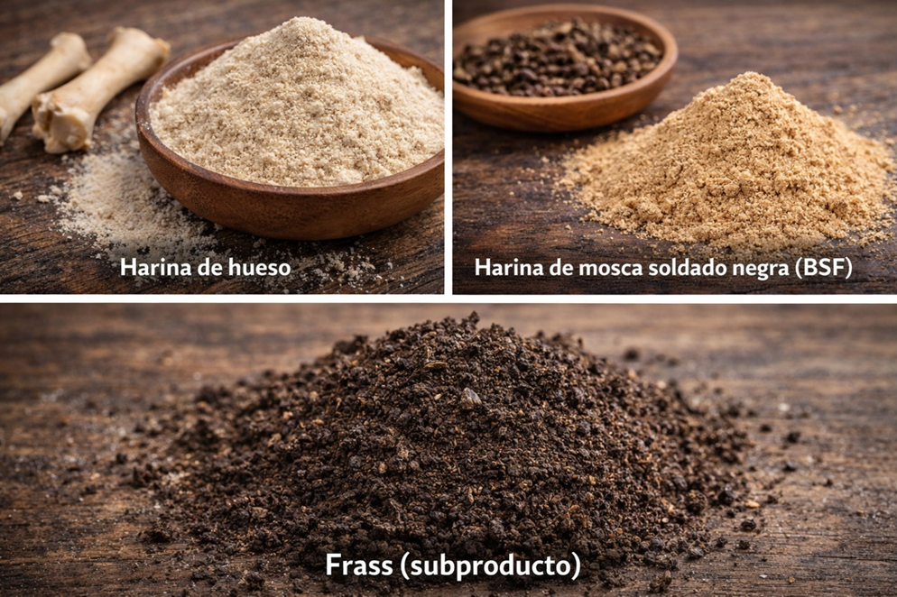
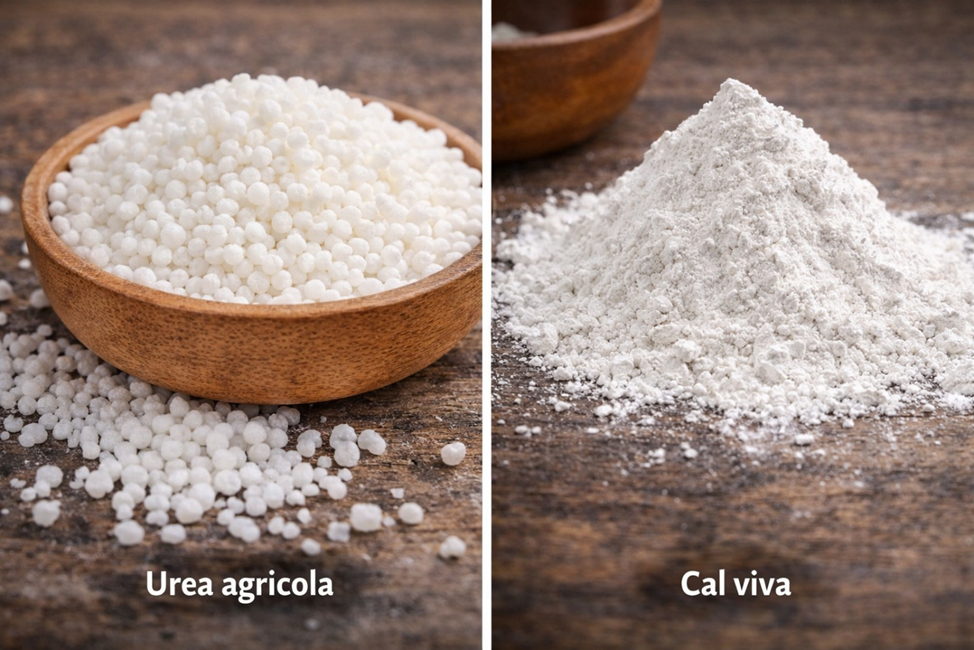
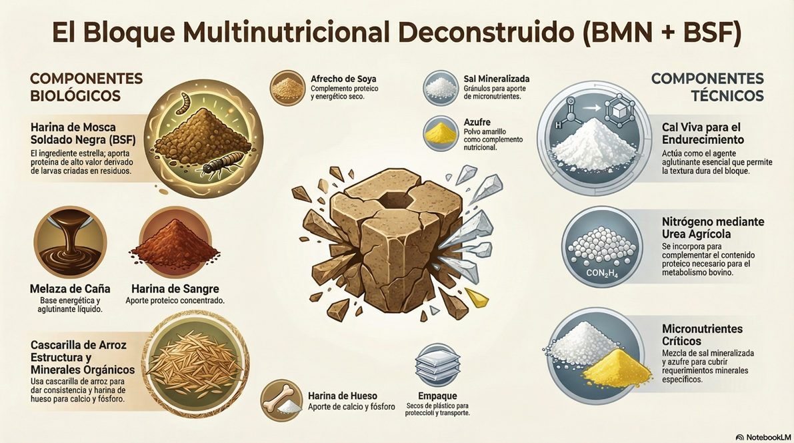

Gestión ambiental aplicada
Reducimos la descarga de residuos orgánicos en cuerpos de agua y fortalecemos un esquema de aprovechamiento responsable.

Somos una propuesta de economía circular enfocada en transformar residuos orgánicos de mataderos en bloques multinutricionales para ganado mediante biotecnología con larvas BSF. Nuestro modelo integra impacto ambiental, eficiencia productiva y viabilidad económica para el contexto cruceño.
Reducimos la descarga de residuos orgánicos en cuerpos de agua y fortalecemos un esquema de aprovechamiento responsable.
Entregamos una alternativa nutricional local para épocas de escasez forrajera, mejorando continuidad operativa en campo.
Implementamos un proceso técnico verificable que convierte desecho en insumo funcional dentro de un ciclo regenerativo.
Equipo del proyecto
Síntesis dinámica de hallazgos previos al mapa de empatía para entender el contexto real del cliente sostenible en Santa Cruz.
Análisis del perfil del cliente sostenible en Santa Cruz, estructurado en seis dimensiones clave.
Cliente sostenible urbano de Santa Cruz: mantiene una intención ambiental consistente, pero enfrenta decisiones condicionadas por la disponibilidad real de opciones, su tiempo y su presupuesto.
Escucha mensajes sobre crisis ambiental, reciclaje y consumo responsable desde medios, entorno social y espacios profesionales.
Ver desarrolloObserva avances en oferta ecológica, pero también alta presencia de prácticas de consumo rápido y plástico desechable.
Ver desarrolloQuiere coherencia entre valores ambientales, estabilidad personal y decisiones de compra aplicables a su vida cotidiana.
Ver desarrolloPromueve hábitos sostenibles, aunque en contextos de presión prioriza, en ocasiones, alternativas más convenientes.
Ver desarrolloInvierte tiempo, presupuesto y constancia para sostener su conducta responsable en una dinámica urbana exigente.
Ver desarrolloBusca reducir residuos, mejorar su bienestar y consolidar una influencia positiva en su entorno social cercano.
Ver desarrolloMaterial visual complementario del mapa de empatía trabajado en clase.
.jpg)

Infografías de la carpeta Defensa_01 para reforzar la lectura del perfil del cliente sostenible.


Aprendizajes clave del proceso de investigación y lineamientos estratégicos para el diseño de propuestas de valor sostenibles.
Consolidación de ideas propuestas por el equipo y priorización de las ideas aprobadas para el desarrollo de la propuesta.
Cuadro 1 · Ideas Propuestas
| # | Participante | Idea / Producto | Tipo de Residuo | Impacto | Facilidad |
|---|---|---|---|---|---|
| 1 | Leonardo Peña | BioKraft, papel de bagazo | Bagazo de caña | Alto | Fácil |
| 2 | Joel Miranda | Paneles aislantes acústicos (fibras de coco y aserrín) | Coco / aserrín | Alto | Fácil |
| 3 | Joel Miranda | Cuadernos con papel reciclado | Papel reciclado | Bajo | Fácil |
| 4 | Maria Ortiz | Macetas con botellas plásticas | Plástico PET | Alto | Fácil |
| 5 | Maria Ortiz | Cuadernos con papel reciclado | Papel reciclado | Alto | Fácil |
| 6 | Maria Ortiz | Lápices plantables | Residuos de madera y papel | Medio | Fácil |
| 7 | Maria Ortiz | Jabones a base de aceite reciclado | Aceite vegetal usado | Bajo | Fácil |
| 8 | Maria Ortiz | Mochilas y tote bags con tela de jeans reciclados | Textil reciclado | Bajo | Fácil |
| 9 | Douglas Flor Hernández | NutriCiclo: sistema integral de valorización de residuos orgánicos | Residuos orgánicos, ganaderos e industriales | Alto | Fácil |
| 10 | Douglas Flor Hernández | Pet food premium para mascotas | Residuos cárnicos | Bajo | Fácil |
| 11 | Douglas Flor Hernández | Fertilizante de cachaza y estiércol | Cachaza / estiércol | Bajo | Fácil |
| 12 | Douglas Flor Hernández | Harina de hueso calcinado | Huesos residuales | Bajo | Fácil |
| 13 | Luis Rocha | Bolsas reutilizables térmicas de envases Tetra Pak | Tetra Pak descartado | Alto | Fácil |
| 14 | Luis Rocha | Desodorizantes naturales para calzado | Cáscaras de cítricos | Alto | Fácil |
| 15 | Luis Rocha | Protectores de impacto para embalaje | Cáscaras de maní | Alto | Fácil |
| 16 | Luis Rocha | Tintes naturales de residuos de frutas y vegetales | Residuos de frutas y vegetales | Bajo | Fácil |
Cuadro 2 · Ideas Aprobadas
Filtrado estratégico de ideas del cuadrante grupal para identificar propuestas eliminadas y propuestas viables con mayor potencial de implementación.
Tabla 1 · Ideas Eliminadas
| # | Idea / Emprendimiento | Materia Prima | Competidor Boliviano Identificado | Por qué está eliminada | Categoría |
|---|---|---|---|---|---|
| 1 | BioKraft, papel a partir de bagazo de caña | Bagazo de caña de azúcar | Inbopak (Cochabamba), Tatapa y Papelbol (UMSA). | La idea base ya tiene ejecución activa y documentación local. | Biomateriales / Papel |
| 2 | Bolsas reutilizables térmicas de Tetra Pak descartado | Envases Tetra Pak descartados | Mamut, Tetra Pak Bolivia 2024 y talleres artesanales. | El reciclaje de Tetra Pak está tomado por variantes equivalentes. | Reciclaje / Packaging |
| 3 | Lápices plantables a partir de residuos de madera y papel | Residuos de madera y papel reciclado | Bohemia Papel, La Paz; presencia en ferias y marketplaces. | Existe oferta con el mismo concepto y producción consolidada. | Economía Circular / Papelería |
| 4 | Tintes naturales de residuos de frutas y vegetales | Cáscaras y residuos de frutas/vegetales | Red OEPACC y prácticas artesanales organizadas. | Aplicación tradicional ya validada; bajo diferencial de innovación. | Tintes / Textil |
| 5 | Fertilizante a partir de cachaza y estiércol | Cachaza de caña y estiércol bovino | Compostajes municipales y productores comunitarios. | Producto de práctica agrícola extendida con poca diferenciación. | Fertilizantes Orgánicos |
| 6 | Harina de hueso | Huesos de matadero bovino | Agroindustrias y procesadoras locales con línea estable. | Mercado con operadores establecidos y ventaja competitiva baja. | Subproductos Cárnicos |
| 7 | Producción de envases biodegradables de almidón de yuca | Almidón de yuca y residuos de fruta | Inbopak, Grupo Verde y Tatapa en escalamiento. | Segmento con varios actores activos y barrera de entrada alta. | Envases Biodegradables |
Tabla 2 · Ideas Viables
| # | Idea / Emprendimiento | Materia Prima | Mercado Destino | Competencia en Bolivia | La Innovación Concreta | Potencial |
|---|---|---|---|---|---|---|
| 1 | Paneles aislantes acústicos de fibra de coco y aserrín | Fibra de coco, aserrín de aserraderos | Constructoras, estudios, hoteles y oficinas en Bolivia | Predominan paneles sintéticos importados; vacío en panel natural local. | Primer panel acústico biodegradabe 100% local con sustitución de importaciones. | ALTO: construcción en crecimiento y demanda de soluciones sostenibles. |
| 2 | Protectores de impacto para embalaje de cáscaras de maní | Cáscaras de maní sin uso industrial | Ecommerce, distribución de productos frágiles y exportación | No hay actor boliviano que use cáscara de maní para este nicho. | Relleno protector biodegradable de origen 100% local para reemplazar espuma. | ALTO: crecimiento del ecommerce y packaging sostenible. |
| 3 | Desodorizantes naturales para calzado de cáscaras de cítricos | Cáscaras de mandarina, naranja y limón | Zapaterías, mercados, bazares y consumidor final | Mercado dominado por aerosoles sintéticos importados. | Formato natural en sachet o spray concentrado con materia prima abundante. | MEDIO-ALTO: bajo costo y nicho local sin liderazgo claro. |
| 4 | Bloques cultivables para hongos comestibles de borra de café | Borra de café de cafeterías y restaurantes | Mercados orgánicos, supermercados premium y hogares urbanos | Se vende hongo cosechado, no bloque cultivable comercial listo. | Modelo centrado en experiencia de cultivo domiciliario y educación alimentaria. | MEDIO-ALTO: tendencia de consumo consciente y producto regalo. |
En esta etapa se determina el nivel de aceptación y viabilidad de NutriCiclo mediante datos de encuestas y evidencia de mercado local.
Tabla 1 · Evaluación Cuantitativa
| # | Nombre y perfil | Pregunta | Respuesta | Opinión |
|---|---|---|---|---|
| 1 | Diego, 23 años, trabaja en cafetería del centro | ¿Entregarías borra y cáscaras si NutriCiclo las recoge de forma fija? | Sí, todos los días botamos residuos orgánicos. Si los recogen, mejor. | Sí |
| 2 | Rolando, 52 años, dueño de pensión en Warnes | ¿Te parece viable que una empresa retire residuos para convertirlos en productos? | Sí, me parece buena idea. Si hay beneficio claro, participaría. | Sí |
| 3 | Marcos, 21 años, estudiante y emprendedor digital | ¿Conoces una empresa en SCZ que haga este modelo integral? | No, no conozco algo igual operando de forma completa. | Sí |
| 4 | Elena, 41 años, administradora de comedor | ¿Participarías en un piloto semanal de separación de residuos? | Tal vez, pero depende de tiempo y de que el retiro sea puntual. | Parcial |
| 5 | Pedro, 37 años, productor ganadero periurbano | ¿Comprarías bloques nutricionales si reducen costo en sequía? | Sí, pero necesito pruebas de campo y precio competitivo. | Sí |
| 6 | Lucía, 29 años, microemprendimiento de alimentos | ¿Te sumarías de inmediato al programa de NutriCiclo? | Por ahora no, primero vería resultados en otros negocios similares. | No |
Tabla 2 · Evaluación Cualitativa
| # | Indicador | Dato / Estadística | Relevancia para NutriCiclo | Fuente | Lectura |
|---|---|---|---|---|---|
| 1 | Residuos orgánicos generados en SCZ | SCZ supera 1,200 ton/día de residuos; una fracción alta es orgánica. | Garantiza disponibilidad constante de materia prima para el modelo. | Reportes municipales ambientales | Alta oportunidad |
| 2 | Restaurantes y cafeterías activas | Miles de unidades gastronómicas generan borra, cáscaras y restos diariamente. | Permite iniciar recolección por zonas con costos logísticos moderados. | Registros empresariales y prensa económica | Mercado proveedor amplio |
| 3 | Actividad pecuaria regional | Demanda sostenida de nutrición animal en ciclos de escasez forrajera. | Abre mercado para bloques multinutricionales y productos derivados. | Informes sectoriales ganaderos | Demanda potencial clara |
| 4 | Costo de insumos para productores | Se reporta presión de costos en alimentación durante sequía. | NutriCiclo puede entrar como opción local de mejor costo-beneficio. | Asociaciones y entrevistas exploratorias | Ventana de entrada |
| 5 | Tendencia de consumo sostenible urbano | Creciente preferencia por soluciones circulares con impacto trazable. | Mejora la aceptación de alianzas y posicionamiento de marca. | Observación de mercado y medios locales | Contexto favorable |
Identificación de insumos para la elaboración del bloque multinutricional, clasificados por origen y naturaleza para su análisis técnico.




Evaluación integral de procedencia, proceso e impacto potencial de cada componente del bloque multinutricional.
| Parte o insumo | ¿De qué material es? | ¿De dónde proviene? | ¿Qué procesos hacemos con el mismo? | ¿Qué impacto potencial podría generar? |
|---|---|---|---|---|
| Melaza de caña | Líquido viscoso rico en azúcares fermentables | Ingenios azucareros del norte integrado (Montero, Warnes), subproducto circular | Se almacena en tanques o turriles y se vierte manualmente o con bomba simple en cada lote, mezclándose con otros insumos usando palas o mezcladora básica | No genera residuos ni efluentes, impacto ambiental bajo |
| Harina de sangre | Proteína animal deshidratada en polvo | Mataderos del Parque Industrial y zona Cotoca, residuo circular | Recolección manual, cocción en ollas o tambores metálicos, secado al sol o en secador simple y molienda con molino pequeño o manual | Uso de agua y calor, pero evita que la sangre contamine ríos |
| Cascarilla de arroz | Fibra vegetal seca rica en celulosa | Arroceras del norte integrado (Mineros, Okinawa), residuo circular | Transporte a granel, triturado con molino básico o uso directo si está fina, mezcla manual en cada lote | Genera poco polvo, evita quema de residuos agrícolas |
| Afrecho de soya | Subproducto vegetal rico en proteína | Industrias aceiteras de Santa Cruz (zona industrial), subproducto parcial | Se pesa y se mezcla directamente sin ningún procesamiento adicional | No genera residuos ni impactos adicionales |
| Harina de hueso | Polvo mineral obtenido por calcinación de huesos | Mataderos locales de Santa Cruz, residuo circular | Recolección, secado al sol, quema en horno artesanal o tambor adaptado y molienda básica | Uso de combustible (leña o gas), pero reduce residuos óseos |
| Harina BSF | Proteína de insecto procesada | Producción propia en Santa Cruz usando residuos de matadero | Cría en cajas o bandejas simples, alimentación manual, secado al sol o en horno básico y molienda sencilla | Reduce residuos orgánicos, bajo impacto si se usa energía mínima |
| Frass | Residuo orgánico de larvas similar a abono | Generado en la producción BSF en la biofábrica | Recolección manual y almacenamiento en sacos para uso o venta | No genera contaminación, se reutiliza como fertilizante |
| Urea agrícola | Compuesto químico nitrogenado | Agropecuarias de Santa Cruz (Montero, Warnes), origen industrial | Disolución en baldes con agua y mezcla manual en cada lote usando herramientas básicas | Riesgo si no se dosifica bien, pero no genera residuos |
| Cal viva | Óxido de calcio en polvo | Proveedores locales, origen mineral | Se agrega al final de la mezcla y se integra manualmente con pala, usando protección básica | Puede causar irritación, pero no genera residuos |
| Sal mineralizada y azufre | Mezcla de minerales esenciales y complemento mineral elemental | Veterinarias y agropecuarias locales (Santa Cruz) | Se pesan en pequeñas cantidades y se mezclan directamente con los demás insumos | No generan residuos relevantes por su baja dosificación |
A partir de la matriz se observa que la mayoría de los insumos provienen de residuos de otras actividades, como mataderos o agroindustrias, lo que permite aprovechar materiales que normalmente serían desechados.
También se identifica que casi todos los insumos se integran completamente en el producto, por lo que no se generan residuos dentro del proceso.
Como puntos de atención, se recomienda controlar el uso de energía en secado y calcinación, además de promover la reutilización de empaques para mantener el enfoque circular de NutriCiclo.
Haz clic en la lista desplegable para visualizar el diagrama completo del BMN + BSF.
Imagen de referencia del producto deconstruido con sus componentes biológicos y técnicos.

Haz clic en cada R para ver cómo NutriCiclo la aplica en su modelo de negocio.
Procesamiento térmico, mecánico y biológico a pequeña/mediana escala en zona industrial PI-44.
Molinos de martillos, mezcladoras industriales, prensas mecánicas, hornos de calcinación y deshidratadores solares.
Cría de mosca soldado negra con ciclo de 10-14 días. Temperatura 25-30°C, humedad 60-70%. Producción continua.
Sensores ESP32+DHT22 para monitoreo automatizado. Control de temperatura y humedad en módulos BSF en tiempo real.
Penetrómetro para verificar dureza y consistencia de cada lote. Garantiza dosificación segura de urea antes de liberar.
Vehículo de recolección con GPS. Rutas optimizadas para reducir km en 30%. Mataderos FRIGOR y municipal de SCZ.
Para alcanzar 500-600°C en horno de calcinación de huesos. Plan futuro: sustituir por bagazo (carbono neutro).
Para molinos, mezcladoras, deshidratadores y sensores IoT. Fuente principal de operación cotidiana.
Deshidratadores solares para sangre y larvas BSF. Alta radiación solar de SCZ reduce dependencia eléctrica.
Procesamiento de biogás propio para autonomía energética parcial. Cierre total del ciclo energético.
Sangre, vísceras y huesos bovinos — +20,000 ton/año disponibles en SCZ sin aprovechar. Materia prima GRATIS.
Consumo interno mínimo. Por cada tonelada de sangre transformada, evitamos miles de litros contaminados en los ríos.
Fertilizantes revitalizan pastizales. BSF sanea patógenos; ácido láurico de la harina BSF mejora inmunidad del ganado.
Compost, frass BSF y ceniza retornan a la tierra. Empaques retornables con Bs 5 de descuento al devolver.
Haz clic en cada tarjeta para ver el detalle completo.
Bloque de larga duración y liberación lenta. La cal da consistencia resistente a condiciones climáticas durante toda la temporada de sequía.
Al finalizar su función como suplemento, los restos sirven como reintegrador de nutrientes para el suelo. Componentes orgánicos y minerales se reintegran en la tierra de forma natural.
Si el bloque se quiebra, se vuelve a prensar o se usa como abono. Nada se desperdicia. Producto 100% local más accesible.
Recompensamos a los mataderos facilitándoles el cumplimiento de la Ley 755 (Gestión de Residuos), transformando su problema legal en nuestra materia prima útil.
Pruebas de dureza con penetrómetro. Medición de aceptación del ganado en campo. Iteración constante de la fórmula.
Visión futura: energía solar para deshidratar ingredientes y sensores automatizados IoT (ESP32+DHT22) para controlar humedad en la producción.
Alianzas con municipios para facilitar la recolección de residuos y capacitar a ganaderos en el uso correcto del bloque.
Cooperación internacional: Swisscontact y JICA financian proyectos de economía circular en Bolivia. La Ley 755 como palanca con los mataderos.
Mercado BSF global: $770M (2025) → $9.5B para 2035. Crecimiento 32.4% anual. Primeros en Bolivia.
La UE aprobó proteínas de insectos en alimentación animal (2023). Solo Ecuador tiene planta BSF industrial en Sudamérica. Esta brecha tecnológica es nuestra oportunidad central.